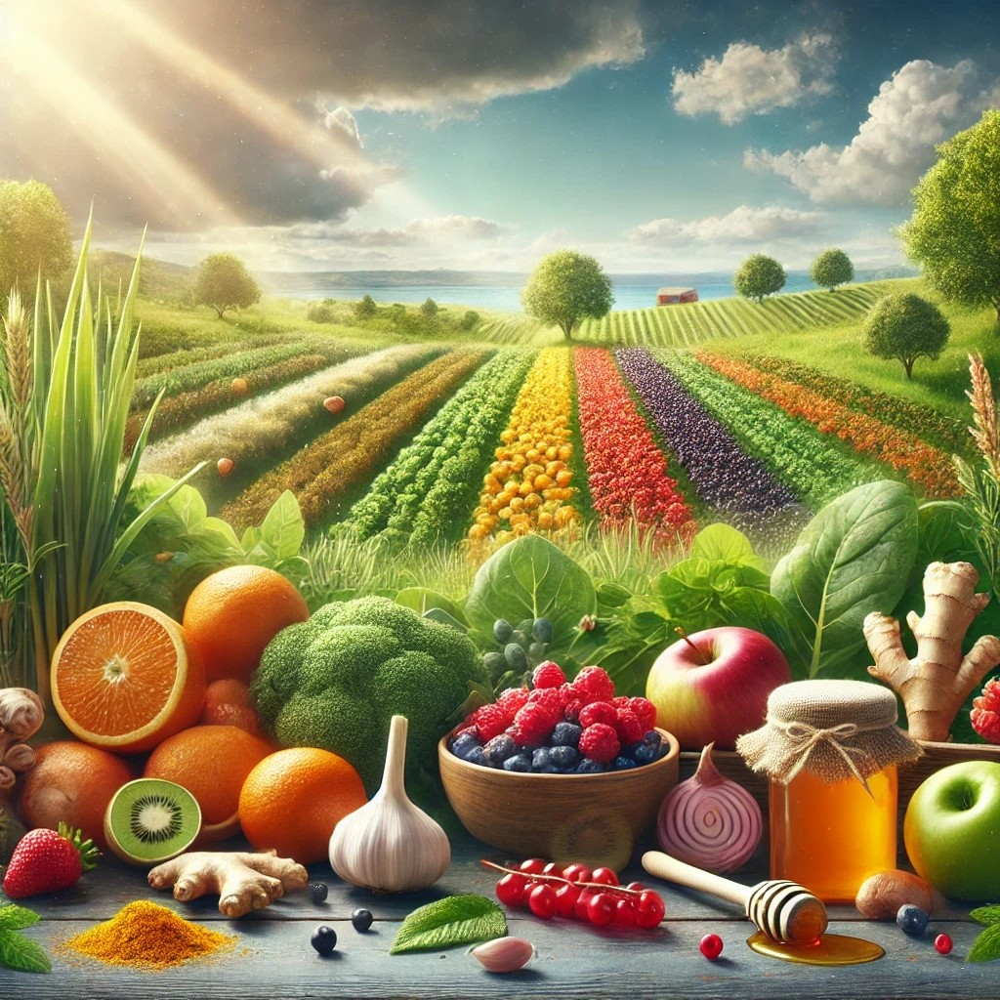

Dicas para Evitar o Consumo Excessivo de Açúcar e Sal
Alimentos que Fortalecem a Saúde dos Idosos
A Importância da Hidratação na Terceira Idade
Alimentos Funcionais para a Imunidade

O Impacto da Atividade Física na Prevenção de Doenças Crônicas
Benefícios da Caminhada para Idosos
Como Reduzir o Estresse na Melhor Idade
Importância da Socialização na Terceira Idade
Atenção Plena e Meditação